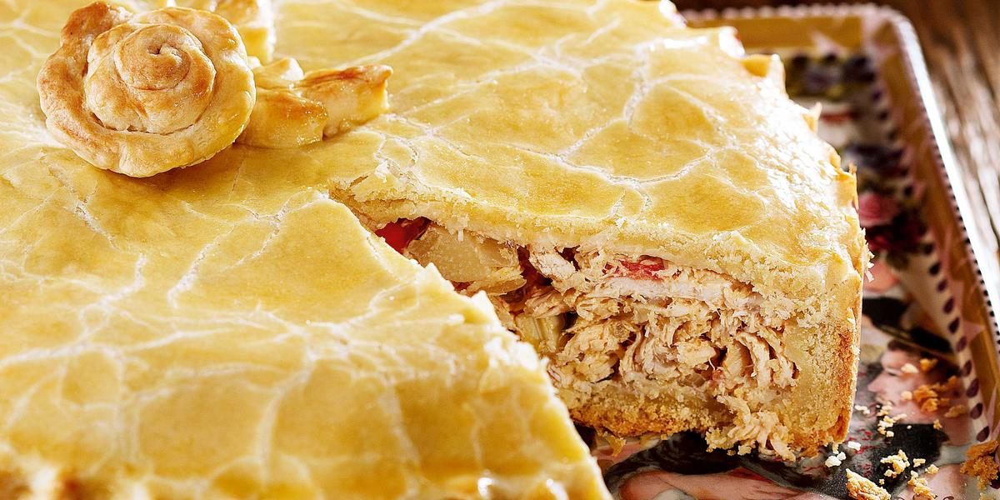

COMO FAZER UMA TORTA DE FRANGO

(Torta de Frango)
Ingredientes
Massa:
- 3 xícaras (chá) de farinha de trigo;
- 6 colheres (sopa) de manteiga;
- Meia lata de NESTLE® Creme de Leite;
- 2 gemas;
- 1 Colher (chá) de fermento em pó;
- 1 colher (chá) de sal.
Recheio:
- 1 colher (sopa) de óleo;
- 4 dentes de alho picado;
- 2 cebolas médis picadas;
- 2 tomates médios picados;
- 1 peito de frango grande cozido e desfiado;
- 2 tabletes de MAGGI® Caldo Galinha;
- 1 vidro de palmito picado;
- 1 pitada de pimenta do reino;
- Meia lata de NESTLE® Creme de Leite;
- 2 colheres (sopa) de cheiro-verde picado;
- 1 gema para pincelar.
Modo de Preparo
Massa:
- Em um recipiente, coloque a farinha de trigo, faça uma cova no centro, adicione a manteiga, o NESTLÉ Creme de Leite, as gemas, o fermente o em pó e o sal.
- Misture com as pontas dos dedos, até que a massa solte completamente das mãos.
- Deixe descansar por 30 minutos na geladeira.
- Forre o fundo e a lateral de uma forma de aro removível (26 cm de diâmetro), reservando cerca de um terço da massa para a cobertura.
Recheio:
- Em uma panela, aqueça o óleo e refogue o alho e as cebolas.
- Junte os tomates e refogue por 5 minutos.
- Acrescente o frango desfiado, os tabletes de MAGGI Caldo dissolvidos em meia xícara (chá) de água quente e refogue até secar a água.
- Acrescente o palmito, o NESTLÉ Creme de Leite, a pimenta-do-reino e o cheiro verde, misture bem e coloque sobre a Massa reservada. Abra a massa reservada com auxílio de um rolo, cubra a torta, fechando bem as bordas, pincele com a gema e leve ao forno médio (180°C), preaquecido, por cerca de 40 minutos ou até dourar. Sirva.